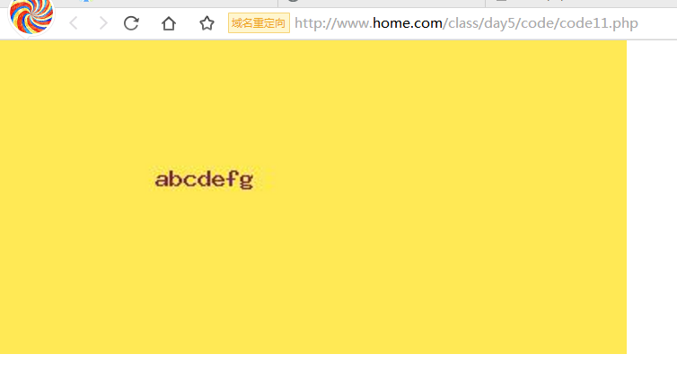

GD图像处理技术
1. GD图像处理技术相关概念
为什么使用GD图像处理技术
在WEB项目中，GD图像处理技术应用非常广泛，比如制作验证码图片，给图片打水印等。
什么是GD图像处理技术
GD图像处理技术 即 PHP通过使用==GD扩展==来操作图像的一种技术。
2. 开启GD扩展
扩展，意味着GD并不是PHP默认就是配置开启的，而是需要额外进行配置的。
==开启步骤==：
第一步，打开php的配置文件php.ini，确认extension_dir配置项已经正确配置，
第二步，去掉下图所示配置前的分号，开启配置项，
第三步，确认php_gd2.dll在extension_dir指定的目录下是否存在，
第四步，重启apache，确认是否开启成功，
重启apache
确认扩展是否开启成功
phpinfo输出如上图所示，说明开启成功。
3. ==GD扩展相关操作==
操作分析
在程序中使用GD扩展操作图像，其实就相当于我们在电脑中使用各种绘图软件来绘制图像，比如PS软件。
我们以PS软件绘制图像的方式为切入点，来分析绘图过程中所需要的一些操作有哪些：
- 打开PS软件（开启GD扩展操作）
- 创建画布操作；
- 在画布上做各种各样的绘图操作（画点，画线，画椭圆，选择颜色，填充颜色）
- 将成品图保存成文件；
- 关闭画布；
- 关闭软件；
创建画布相关操作
涉及的函数：
imagecreate(宽, 高) 创建画布，单位像素
imagecreatetruecolor(宽, 高) 创建一个真彩色画布
imagecreatefromjpeg(jpeg图片路径) 根据一张已有的jpeg图片创建画布
imagecreatefromgif(gif图片路径) 根据一张已有的gif图片创建画布
imagecreatefrompng(png图片路径) 根据一张已有的png图片创建画布
==需求==：根据以下要求完成操作，
- 根据imagecreate和imagecreatetruecolor两个函数分别创建一个400*200的画布，打印返回值；
- 根据一张已有的jpeg图片创建画布，打印返回值；
==解答==：创建名为code2.php的程序文件，代码如下：
1 |
|
访问codex1.php，输出的内容如下：
1 | resource(2) of type (gd) #imagecreate创建的画布资源 |
==小结==：
- imagecreate和imagecreatetruecolor创建画布是指定的是画布的宽度和高度，单位像素；
- imagecreatefrom系列的创建画布是指定固定格式的图片路径，比如imagecreatefromjpeg，就需要指定jpeg格式的图片路径；
关闭画布操作
涉及的函数：
imagedestroy(画布资源) 销毁画布资源
==需求==：根据以下要求完成操作，
- 根据imagecreate创建一个400*200的画布，打印返回值；
- 使用imagedestroy关闭打开的画布，再次打印”1”中创建的画布资源返回值；
==解答==：创建名为code3.php的程序文件，代码如下：
1 |
|
访问code3.php，输出的内容如下：
1 | resource(2) of type (gd) #imagecreate创建的画布资源 |
图像输出相关操作
涉及的函数：
imagejpeg(画布资源[, 保存文件的全路径]) 以jpeg的格式输出图片到浏览器或保存成文件
imagepng(画布资源[, 保存文件的全路径]) 以png的格式输出图片到浏览器或保存成文件
imagegif(画布资源[, 保存文件的全路径]) 以gif的格式输出图片到浏览器或保存成文件
==需求==：创建code4.php程序文件，
- 使用imagecreate创建一个400*200的画布；
- 同时实现根据GET方式传递的type值判定，如果type值为1，则直接将”1”中创建的画布以jpeg图片的格式输出到浏览器；如果type值为2，则将”1”中创建的画布以jpeg格式保存成图片文件；
==解答==：创建名为code4.php的程序文件，代码如下：
1 |
|
访问code4.php：
当GET方式传递的type值等于1时，效果为：
当GET方式传递的type值等于2时，效果为：
==小结==：
- 如果要将图片输出到浏览器，则必须在输出前指定header内容类型；
- 如果要将图片保存成文件，则需要给函数指定第二个参数，为文件保存的全路径；
画布内容相关操作
涉及的函数：
imagecolorallocate(画布资源, R色值, G色值, B色值) 分配一个颜色
imagefill(画布资源, 基点x坐标, 基点y坐标, 颜色) 向画布填充颜色
imageline(画布资源, 起点x坐标, 起点y坐标, 终点x坐标, 终点y坐标, 颜色) 画线段操作
imagerectangle(画布资源, 对角线起点x坐标, 对角线起点y坐标, 对角线终点x坐标, 对角线终点y坐标, 颜色) 画矩形
imagearc(画布资源, 圆心x坐标, 圆心y坐标, 椭圆宽, 椭圆高, 起点角度, 终点角度, 颜色) 画圆弧线段
imagestring(画布资源, 字体大小, 文字左上角x坐标, 文字左上角y坐标, 内容, 颜色) 根据系统字体写字
imagettftext(画布资源, 字体大小, 角度, 文字左下角x坐标, 文字左下角y坐标, 颜色, 字体路径, 内容) 根据ttf格式的字体写字
==TIPS==：在程序中，画布的坐标都是以左上角为（0, 0）坐标点：
==需求1==：创建code5.php程序文件，
- 使用imagecreate创建一个400*200的画布；
- 将画布的背景色填充为RGB(255, 233, 85)；
- 将画布以jpeg格式的图片直接输出到浏览器；
==解答1==：创建名为code5.php的程序文件，代码如下：
1 |
|
访问code5.php，效果为：
==需求1小结==：
函数：
原理：
==需求2==：创建code6.php程序文件，
使用imagecreate创建一个400*200的画布；
将画布的背景色填充为RGB(255, 233, 85)；
在画布上画一条线段；
将画布以jpeg格式的图片直接输出到浏览器；
效果图为：
==解答2==：创建名为code6.php的程序文件，代码如下：
1 |
|
访问code6.php，效果为：
==需求2小结==：
函数：
原理：
两点之间确定一条线段，所以画线段需要指定起点的（x,y）坐标和终点的(x, y)坐标；
==需求3==：创建code7.php程序文件，
使用imagecreate创建一个400*200的画布；
将画布的背景色填充为RGB(255, 233, 85)；
在画布上画一个矩形；
将画布以jpeg格式的图片直接输出到浏览器；
需要的效果图：
==解答3==：创建名为code7.php的程序文件，代码如下：
1 |
|
访问code7.php，效果为：
==需求3小结==：
函数：
原理：
通过确定对角线的两个点的坐标，实现最终的矩形。
==需求4==：创建code8.php程序文件，
- 使用imagecreate创建一个400*200的画布；
- 将画布的背景色填充为RGB(255, 233, 85)；
- 在画布上画一个椭圆；
- 将画布以jpeg格式的图片直接输出到浏览器；
==解答4==：创建名为code8.php的程序文件，代码如下：
1 |
|
访问code8.php，效果为：
==需求4小结==：
函数：
imagearc(画布资源, 圆心x坐标, 圆心y坐标, 椭圆宽, 椭圆高, 起点角度, 终点角度, 颜色)
原理：
==需求5==：创建code11.php程序文件，
- 使用imagecreate创建一个400*200的画布；
- 将画布的背景色填充为RGB(255, 233, 85)；
- 在画布上使用imagestring写一句话：”今天天气好晴朗”；
- 将画布以jpeg格式的图片直接输出到浏览器；
==解答5==：创建名为code11.php的程序文件，代码如下：
1 |
|
访问code11.php，效果为：

==需求5小结==：
函数：
原理：
- 字体的局限性大；
- 内容如果输出中文的话，则默认是乱码，因为要开启额外的扩展支持；
==需求6==：创建code13.php程序文件，
- 使用imagecreate创建一个400*200的画布；
- 将画布的背景色填充为RGB(255, 233, 85)；
- 在画布上使用imagettftext写一句话：”今天天气好晴朗”；
- 将画布以jpeg格式的图片直接输出到浏览器；
==解答6==：创建名为code13.php的程序文件，代码如下：
1 |
|
访问code13.php，效果为：
==需求6小结==：
函数：
原理：
- 使用这个函数，需要指定自定义的ttf格式的字体来实现；
辅助相关操作
涉及的函数：
imagesx(画布资源) 获得图片的宽度
imagesy(画布资源) 获得图片的高度
getimagesize(图片路径) 获得图片的宽度和高度等信息
==需求==：创建code12.php程序文件，
- 使用imagecreatefromjpeg创建一个画布；
- 获取这个画布的宽度；
- 获取这个画布的高度；
- 获取这个画布的宽度、高度、位度等信息；
==解答==：创建名为code12.php的程序文件，代码如下：
1 |
|
访问code12.php，效果为：
1 | 宽度为：500px；高度为300px #imagesx和imagesy获得的宽度和高度信息 |
==需求小结==：
- imagesx和imagesy需要指定画布资源参数；
- getimagesize需要指定文件路径参数；
4. 全天总结
创建画布相关函数
以下两个函数是根据指定的宽高来创建画布
imagecreate函数
imagecreatetruecolor函数
以下三个函数是根据一张已有的图片来创建画布
imagecreatefromjpeg函数
imagecreatefrompng函数
imagecreatefromgif函数
关闭画布资源操作函数
imagedestroy函数 销毁画布资源
输出图像操作函数
以下三个函数即可以将图片直接输出到浏览器（==在输出之前必须指定header(‘Content-type:image/xxxx’)项==），又可以将图片保存成指定格式的图片文件，
imagejpeg函数
imagepng函数
imagegif函数画布操作相关函数
imagecolorallocate函数 分配颜色函数
imagefill函数 填充背景色
imageline函数 画线段（画点）
imagerectangle函数 画矩形
imagearc函数 画弧线段（椭圆，正圆）
imagestring函数 根据系统字体写字
imagettftext函数 根据ttf格式的字体写字
打水印操作
imagecopymerge函数 实现打水印操作
制作缩略图
imagecopyresampled函数 实现缩略图功能函数